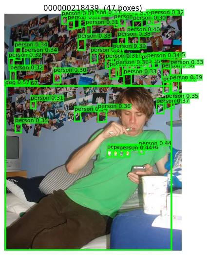
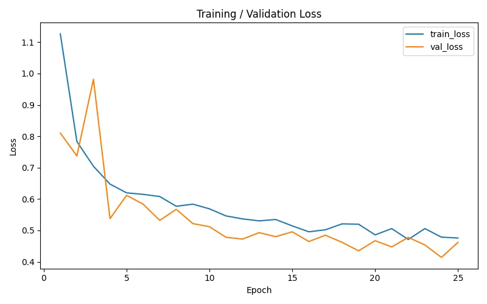
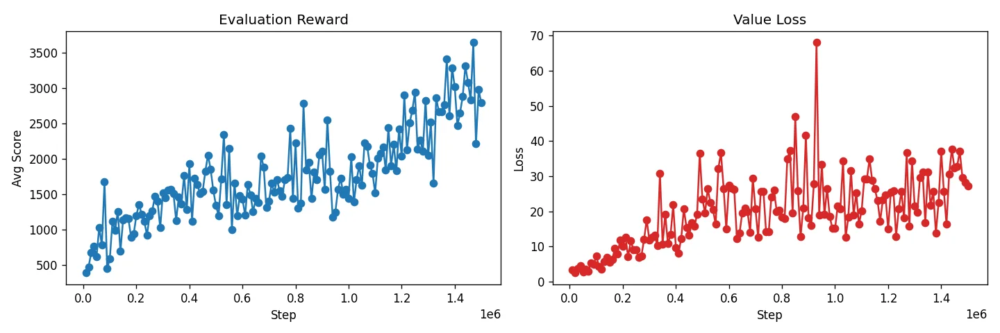
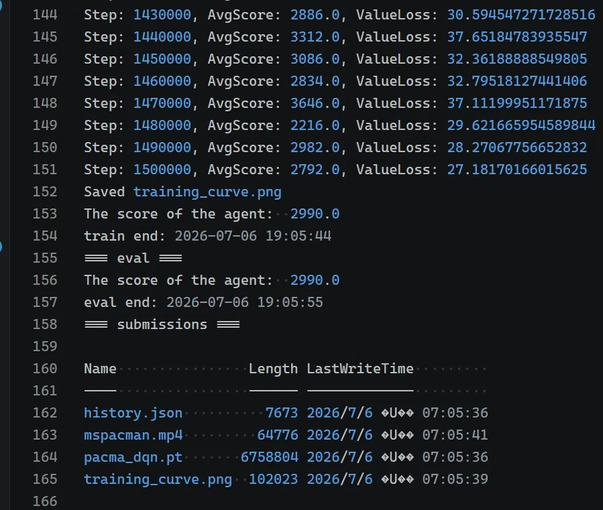

上一篇整理了 MVC Lab 前五份作業的索引，這篇記錄第六到第八週的三份作業。路線分成兩條：HW7 與 HW8 從零訓練模型，一個是 U-Net 語意分割、一個是 DQN 玩 Ms. Pac-Man；HW6 拿現成的預訓練模型做 zero-shot 偵測，重點放在 prompt 寫法的研究。三份都有可驗證的數字，訓練量最大的 DQN 跑了 150 萬步，評估拿到 2990 分，站上滿分門檻的 2000。
課程走到下半段，三份作業各占一種任務型態：HW6 用 Grounding DINO 做 zero-shot 偵測，整份作業其實是一個 prompt 工程研究；HW7 從零刻一個 U-Net，在杜拜空拍圖上分割六類地物；HW8 用 DQN 從像素學會玩 Ms. Pac-Man，是三份裡訓練量最大的一份。前五份作業的紀錄在 EXP / P16。
# 三份作業總覽
| HW | 主題 | 框架 / 模型 | 關鍵指標 |
|---|---|---|---|
| HW6 | Grounding DINO 開集偵測 prompt 研究 | grounding-dino-tiny（zero-shot） | person 裸名詞 precision 0.812 |
| HW7 | U-Net 語意分割（杜拜空拍） | PyTorch 從零實作（7.76M 參數） | pixel acc 0.8505（門檻 0.84） |
| HW8 | DQN 玩 Ms. Pac-Man | PyTorch（Nature DQN） | 評估 2990 分（門檻 2000） |
# 逐份拆解
HW6 — Grounding DINO：一個 prompt 工程研究
這份作業從頭到尾沒有訓練步驟。拿 HuggingFace 上的 grounding-dino-tiny 做 zero-shot 開集偵測，研究對象是 prompt 本身：五個 COCO 類別，每類寫三種 prompt（裸名詞、加冠詞、描述性片語），在 20 張有標註的影像上量 precision@IoU=0.5，勝出的寫法再套到 150 張未標註影像做質性觀察。
結果很一致：常見又視覺明顯的類別，裸名詞全部勝出，person 0.812、car 0.889、cat 0.429；多加冠詞或描述子句只會多出一堆低信心的框，把 precision 拉低。bicycle 和 dog 在這個小標註集上屬於病態案例，GT 實例太少，描述性 prompt 又過度觸發，數字參考價值有限。

失敗模式的觀察比數字更具啟發性。密集場景會爆框，一個貼滿照片牆的房間被框出 46 個 person；描述性的 dog prompt 會在人和背景紋理上憑空生出狗；欄杆和肢體會被當成腳踏車。結論收在「若拿來當標註輔助工具」：信心門檻提到 0.40、加上 class-wise NMS、只用裸名詞。標註者的瓶頸是刪錯框，precision 在這個場景比 recall 值錢。
HW7 — U-Net 語意分割
從零實作一個 7.76M 參數的 U-Net：encoder 一路壓、bottleneck 換手、decoder 用 transposed conv 一路放大，skip connection 在 channel 維把兩邊接起來。資料是杜拜空拍影像，72 張大圖切成約 1300 個 256×256 patch，分六類地物。25 個 epoch 跑完，驗證 pixel accuracy 0.8505，過了 0.84 的課程門檻。
| 類別 | IoU |
|---|---|
| 水體 Water | 0.886 |
| 裸地 Land | 0.810 |
| 建築 Building | 0.658 |
| 植被 Vegetation | 0.568 |
| 道路 Road | 0.527 |
| 未標註 Unlabeled | 0.000 |
各類 IoU 的排序跟直覺一致：水體和裸地面積大、紋理均勻，分數最高；道路細長、占比低，0.527 墊底，是語意分割的老問題。Unlabeled 是稀疏的 catch-all 類別，模型幾乎不會主動預測它，IoU 掛零，對 pixel accuracy 達標沒有影響。

HW8 — DQN 從像素學玩 Ms. Pac-Man
任務是讓代理直接看畫面學會玩 Atari 的 Ms. Pac-Man。輸入是 4 張堆疊的 84×84 灰階畫面，走 Nature DQN 的經典架構：三層卷積接兩層全連接，輸出 9 個動作各自的 Q 值。堆 4 張是為了讓網路看得出移動方向，單張靜態畫面無法判斷鬼的行動方向，例如是在追人還是逃跑。
訓練靠三個機制撐住：replay buffer 存 6 萬筆 transition，隨機抽樣打散時間相關性；target network 每隔固定步數才同步一次，讓學習目標穩住；ε-greedy 從 0.9 線性降到 0.05，前期到處亂走探索，後期照 Q 值行動。折扣因子 0.99，讓代理在意長期回報。
訓練量就是分數
預設的 25 萬步通常到不了 2000 分的滿分門檻，這次直接拉到 150 萬步，單張 RTX 4060 跑了八個多小時。平均分數從 400 起步，50 萬步前後站上 1500，尾段在 2200 到 3600 之間震盪；訓練完的評估拿到 2990 分。


# 學術誠信聲明
本文為個人學習紀錄。三份作業的 starter 骨架與教學 notebook 由課程提供，TODO 實作、prompt 設計與所有實驗數據是自己跑出來的；課程資料集與模型權重一律不隨附，請透過正規管道取得。在學的 MVC Lab 學生請自己寫過一次，歡迎參考結構與思路。
# 技術環境
- 語言 — Python 3.11
- 深度學習框架 — PyTorch 2.x（HW7 / HW8）
- HW6 — HuggingFace Transformers（IDEA-Research/grounding-dino-tiny）
- HW8 — Gymnasium[atari]（ALE/MsPacman-v5）
- 硬體 — RTX 4060 8GB（HW8 的 150 萬步約八小時；HW6 掃 150 張影像約 4 分鐘）
# 相關連結
MIT License